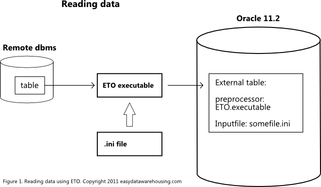
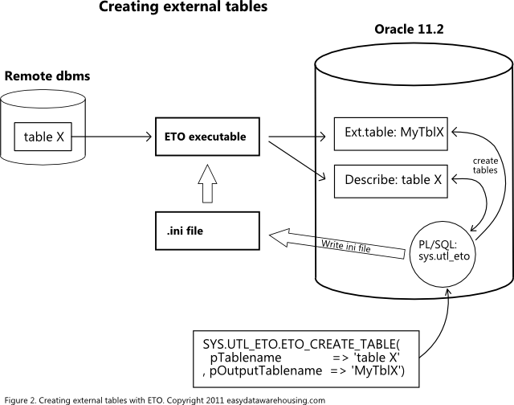

| Easy .. to Oracle | Technical overview | Comparison | Requirements | Features and futures |
| Usage | Screenshots | Licenses | Links | FAQ |
Easy To Oracle (ETO) is a small application that sits between the Oracle database and a remote database. In order to reduce the number of dependancies there is one executable for each remote dbms platform. The ETO executable takes one parameter: the name of an ini file containing all the necessary information to extract data from the remote database. Like server name, server port, user, password and of course the source table.
The ETO executable is called by the Oracle database when an external table is accessed that uses the preprocessor feature (available since Oracle 10.2.0.5). Oracle passes the name of the ini file, where you would normally expect to see an input file. ETO than opens a connection to the remote database and reads the specified table. ETO uses the native communication protocol for that database. For example to access Microsoft SQL Server the TDP protocol is used.
Data returned from the remote database is converted to text format by ETO. ETO can cache one or more records from the remote database before writing this data to the standard output stream (stdout). The Oracle database is listening for data arriving on this stream and passes it to the external table.
Any runtime errors (for example the source table does not exist) are sent to a logfile.
For more information on the preprocessor facility see chapter 14 of the Oracle Database Utilities Guide (E16536-05).

How to create external tables
It would be quite tedious to create external table definitions manually. ETO is accompanied by a PL/SQL package to automate this task.
When an Oracle user wants to access data from a remote database, the package sys.utl_eto can be used. First a connection to a remote database can be defined with this package. This stores parameters like server name, server port, user and password
After this step the function eto_create_table may be called, passing the names of the source- and the target table. The eto_create_table function now writes an ini file to the filesystem and creates an external table to read the "describe" information of the remote table.
On opening this table the ETO executable does it's work and returns the fieldnames and -types for the requested remote table. The eto_create_table function now has enough information to construct the target external table. The user can now use this external table like any other Oracle table.
Many more options are available to finetune and automate this process.

Back to ETO Home.
Copyright 2011-2014 Ivo Herweijer